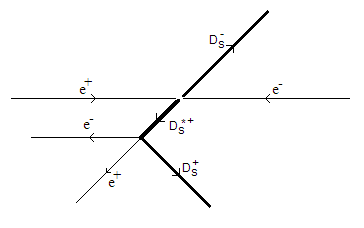

13 February 2010. American Physical Society Meeting, Washington DC.
Updated predicted rate of signal. Outlined analysis strategy. Introduced the CLEO-c detector and a simulated signal event in it. Stacked signal and background plots for the selection criteria presented. Predicted signal and background events in 586 /pb of data.List of Presentations (Private)